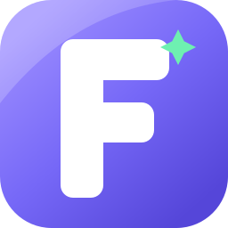

Multi-source fallback
Discover the best icon in the page, try the conventional path, then use public fallback sources.

favicon-apiZero dependencies · Self-hosted
A small, secure Node.js API that discovers real favicons, rejects fake placeholders, and falls back when sites block bots.
Try it with any public website.
Successfully served 0 favicon requests
Discover the best icon in the page, try the conventional path, then use public fallback sources.
Reject HTML responses, 1×1 pixels, and known default placeholders before returning a result.
Block private and reserved addresses, including redirect destinations, before every request.